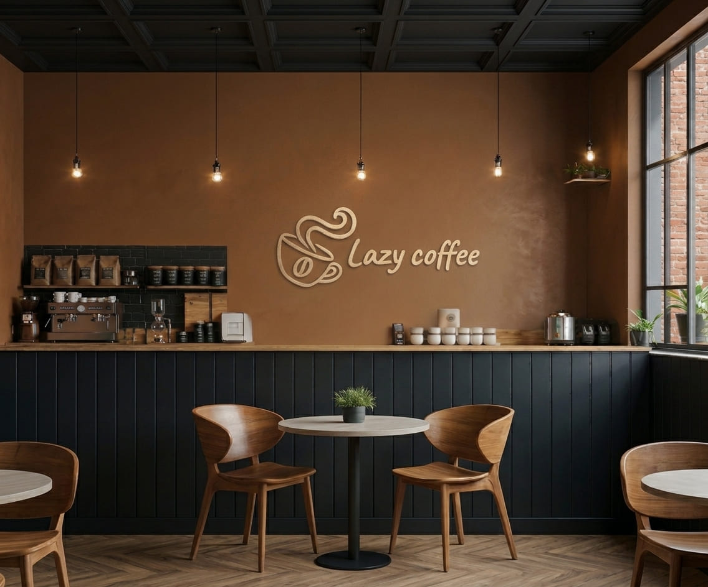

用心感受風味
從咖啡的香氣到入口後的層次，留心每一個細節，讓每一杯都有自己的樣子。
A CUP WITH CHARACTEROUR STORY
把日子放慢，讓咖啡香留久一點，在台南城市的一隅留一段不必匆忙的時間。

OUR STORY
Lazy coffee 想分享的，不只是咖啡。 更是一種把注意力還給自己的日常—— 暫時放下待辦清單，聽見咖啡落進杯裡的聲音， 好好享受此刻的香氣與溫度。
不論是獨自來坐坐，或和重要的人聊聊天， 希望這裡都能成為你生活裡，一個舒服而剛好的停靠。
THE WAY WE SEE IT
關於一杯咖啡、一道甜點，和一個讓人自在的空間。
從咖啡的香氣到入口後的層次，留心每一個細節，讓每一杯都有自己的樣子。
A CUP WITH CHARACTER讓甜點跟著季節轉換，把日常裡的小小期待，放進每一次的午後時光。
A LITTLE SEASONAL JOY不需要特別的理由，想休息時就坐下來，讓步調回到自己舒服的速度。
ROOM TO JUST BECOME AS YOU ARE
Lazy coffee 採預約制，歡迎先填寫來店需求。店家資訊與營業時間如下。
在地圖上找我們台南市中山路 120 號
週一至週六 09:00–22:00
每週日公休